个类，如人的健康情况分好、中、差，则
个类，如人的健康情况分好、中、差，则 3.3 数据的分析
前面讲的是如何取得样本的问题，这一节来谈谈对样本进行统计分析的问题。抽样的目的，是通过得到的样本，去对样本所来自的总体的情况获得了解，统计分析的任务就是做这件事。[书ji分 享V 信shufoufou]
我们先把讨论的范围明确界定一下。首先，这里只讨论单指标的问题。例如，只考虑人的体重，体重就是一个单指标。可能我们关心的还有其身高，这时（体重、身高）就是 2 指标，类似有多指标（比如加上其腰围、臂长，等等）。多指标的复杂之处在于指标之间有相关性，例如，一个人的体重与其身高有相关性。指标间这种相关性问题的统计分析到后面再谈。
其次，我们只讨论简单随机抽样的情况，更复杂的抽样方案会带来烦琐的公式，不便在此讨论。
关于样本，有两种情况，一是数量型的，一是属性型的。前者如人的身高、收入之类，可以用一个数量来表达。后者如人的健康状况分成好、中、差三个等级，产品质量分特级、一级，等等。
对属性型样本的情况，实际上是一个分类。总体中的个体按某属性分成 个类，如人的健康情况分好、中、差，则
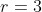
。以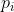
记第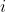
类个体数占全部个体数的比率，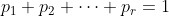
。问题只在于通过样本估计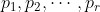
，设所抽的 个样本中，归入第 类的有
个样本中，归入第 类的有 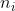
，则以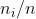
作为 的估计，这就是我们讲过的“用频率估计概率”的方法。不同的是，这里抽样是不放回的——在讲“盒中抽球”模型时，我们曾规定每次抽球后，球要放回去再抽下一次，以维持盒内黑、白球个数不变，因而模型也不变。在实用上，抽样都是不放回的，但这不影响“用频率估计概率”的方法。以后我们将指出，实际上抽样不放回时，估计的效率更高。对数量型的情况，设总体中有  个个体。在应用上， 可以是已知，也可以未知，但是一个定数。每一个体有一个指标值，记为
个个体。在应用上， 可以是已知，也可以未知，但是一个定数。每一个体有一个指标值，记为
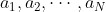
。例如总体中包含 1000 名工人，我们关注的指标是其工资，则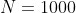
，而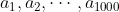
是这 1000 名工人的工资。假定抽出 名工人，其工资分别是 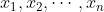
，则 就是样本。所以，样本值如何，要看你关心的是个体的什么指标。如若关心的是工人的体重，则样本值将会是另一些数据了。问题在于通过所得的样本值去了解（统计上称推断）关于总体的情况，哪些情况是我们想了解的呢？这要看研究者的关注之所在。以下几个问题及研究处理方法是典型的。
总体分布 说得仔细点，是“总体中的个体的指标值的分布”。拿上例来说，就是这 1000 名工人的工资的分布。它告诉我们，有多少工人，其工资是多少，或工资处于一定界限之内的工人有多少，所占比率如何。分布在表述上可粗可精，如就本例而言，说“工资在 500 元以下的和不少于 500 元的各占 50%”，是工资分布一种很粗的表述。如果说“工资少于 300 元的，300～500 元的，501～750 元的及 750 元以上的，各占 25%”，则表述就更精一些。如有必要，还可以表述得更精，但并非愈精愈好，粗一些的表述便于我们掌握大势，但损失了较多的细节。精一些的表述其优缺点与此正相反。
总体平均值 指总体中全部 个个体的指标值 的算术平均：
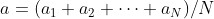
（4）这是最重要的一个指标。在许多调査工作中，人们关心的就是这个平均值。
属性型情况下的各类比率，是总体平均值的一个特殊情况。如在人的健康情况分好、中、差的例子中，我们可以人为地给每个人以一数量指标，其值为 1 或 0，视他的健康情况为“好”或为“中、差”而定，则这个指标的总体平均值，正好就是健康情况好的人数占全群体人数的比率。因此，有关属性型指标情况的问题没有必要单独去讨论。
总体方差 总体方差是刻画指标值围绕其平均值的散布程度的量。设总体中含 个个体，指标值分别为 ，总体平均值为  ，则
，则
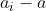
反映指标值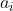
与 的偏差。一共有 个偏差 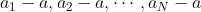
，其平方的算术平均，即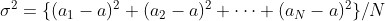
（5）就是总体方差。其平方根，即称为总体标准差。为简省书写，在数学上对许多个数的连加常用符号∑（读如 Sigma）。
例如，
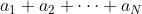
简记为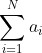
。这样，（4）（5）两式可分别简写为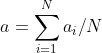
（6）和
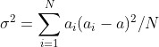
（7）在公式（6）中，记号 中的 称为“足标”，∑号下面的 1 和上面的 ，指示在相加时足标流动的起止点。例如若
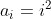
，则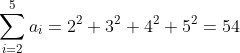
也可直接写成
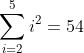
，不必一定通过足标显示出来。方差（及标准差）是反映总体性质的、重要性仅次于平均值的重要参数。方差愈大，个体指标值散布愈宽，每一个体的代表性就愈差。在这种情况下，为了解总体情况而抽样时，就要求有较大的样本量，即需要抽出更多的个体。在方差小时，所需样本量就较小因而可以节省。在极端情况，总体中的一切个体都有同一指标值，方差为 0，这时只用一个个体就可以完全代表全部总体。
总体分布的估计其实是“属性型指标”的问题，已在前面讨论过了。例如估计某一群体中工人工资的分布问题，为估计工资在 350～550 元的工人在全体中所占比例，只需用其频率——样本中工资在此范围内人数所占比率就可以。这个处理方法有其不便之处，因为谈到分布，是一个全面的概念，为提供充分的信息，我们必须对许多区间段的比率做估计，例如 250～350 元，300～450 元，450～600 元，等等。结果会给出一堆杂乱的数字，我们不易从中发现什么有意义的特点，用一种叫作直方图的图示法可以弥补这个缺点。我们举一个例子来解释什么是和怎样画直方图。
例如，某市调查小学生每月零花钱数，通过随机抽样得 223 人，其月零花钱数为（括号内是人数）
| 26(1) | 27(4) | 29(1) | 30(4) | 31(3) | 32(2) | 33(5) | 34(3) | 35(2) |
| 36(3) | 37(7) | 39(7) | 40(1) | 41(1) | 42(5) | 43(8) | 44(6) | 45(7) |
| 46(6) | 47(6) | 48(8) | 49(4) | 50(2) | 51(5) | 52(5) | 53(5) | 54(5) |
| 55(3) | 56(5) | 57(3) | 58(8) | 59(4) | 60(6) | 61(5) | 62(3) | 63(2) |
| 64(1) | 65(1) | 66(3) | 67(4) | 68(2) | 69(8) | 71(2) | 72(1) | 73(1) |
| 74(3) | 75(2) | 76(2) | 78(1) | 80(4) | 81(3) | 82(2) | 83(4) | 84(7) |
| 90(3) | 91(3) | 92(3) | 93(4) | 95(2) |
这些数据做成的直方图如图 3.1 所示。
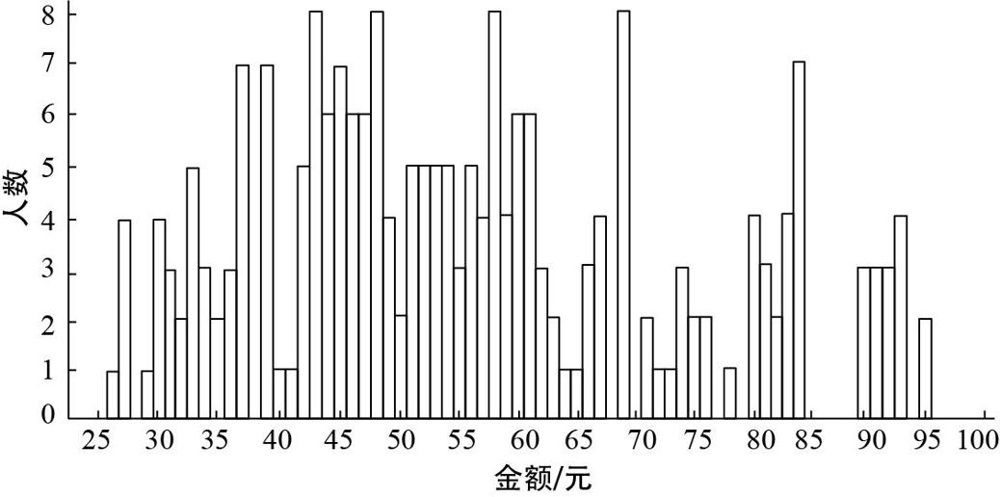
图 3.1 金额 - 人数直方图
这个直方图由一些矩形组成，选下面的底边长为 1（这个值可自由选定，见下）。矩形的作法如下。因 26 元的有 1 人，把这 1 人算作 25～26 元的区间内，称为组区间，1 称为这个组区间的频数。作一个区间，底边为 25～26 而高为频数 1。类似地，27 元的有 4人，将其算在组区间 26～27 内，频数为 4，作一个区间其底边为 26～27 而高为 4。以此类推，根据所有的数据把所有的矩形都作出来，即得到这组数据的直方图，叫“频数直方图”。也可以用组区间内数据个数占全部数据个数的比率（称为频率），来取代频数作为区间的高，这样制作出的直方图叫频率直方图。例如，在频率直方图中，底边为 25～26 的矩形之高为 1/223，而底边为 26～27 的矩形之高为 4/223，等等。
频率直方图有以下的性质。首先，全部矩形面积之和为 1。其次，任意给定整数 、 ，
，
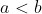
，则在样本中，其月零花钱超过 元但不超过 元的人数所占比率，正好等于 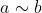
区间上所有矩形面积之和。因此它具有概率分布的性质，所以可以看作在全市小学生这个总体中，月零花钱这个指标的总体分布的一个近似估计。这样制作出的直方图有一个缺点：各矩形的高呈现一种杂乱而无规则的变化，以致从中很难看出分布有何特征。这原因在于组区间之长取得太短，显示了样本中过多的细节，而这种细节受到抽样的偶然性影响。例如，月零花钱为 37 元和 39 元的各有 7 人，而为 38 元的一个也没有，这极可能是偶然性所致。为改善这个情况，我们把组区间取长些，例如定为 10，组区间取为 20～30, 30～40,…, 90～100，然后计算落入各组区间内的数据个数。注意，例如在区间 30～40 中，等于其左端 30 的数据不计在内（它计入组区间 20～30 中），余类推。这样得出各组区间的频数为
20～30 (10) , 30～40 (33) , 40～50 (53) , 50～60(50),
60～70 (30) , 70～80 (16) , 80～90 (19) , 90～100 (12)，
制作的频数直方图如图 3.2 所示。从这张直方图上就可以看出某些特征，即开始时人数上升，达到一个高点后即下降，大致呈现一种“两头低、中间高”的形态，但不像是正态的，因正态分布在最高点两边呈对称形态，而此处则比较偏向大值的一边。
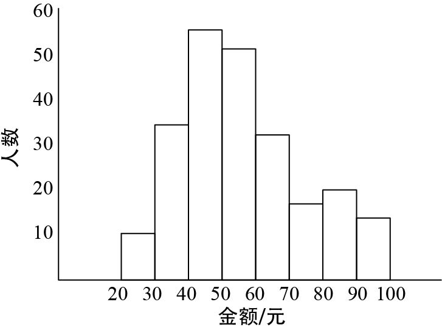
图 3.2 以 10 元为间距的金额 - 人数直方图
把组区间适当取大一些使分布的特性显示出来，但也付出一定的代价。例如，从这张直方图上只能看出，在 40～50 这个区间（不包括 40）内数据个数为 53，但具体每个值，如 41、42 等，各有多少数据，就看不出来，而在原来的直方图上这是可以看出来的。
也可以把频数转成频率从而制作出频率直方图。但要注意的是，必须把各组区间的频率除以区间之长（在此处为 10）作为矩形的高。例如，组区间 30～40 上的那个矩形的高应为
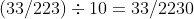
，这样做的目的，是使频率直方图仍具有前面（在边长为 1 时）所讲过的那两条性质。
总体均值的估计：样本均值 仍设总体中包含 个个体，其指标值分别为 。总体平均 由公式（4）确定，通过简单随机抽样得到样本 。 不能超过 ，要利用这些样本去估计 。
估计的方法很简单，就用算术平均
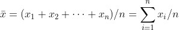
去估计 。 称为样本均值。这种方法，一般没有接触过统计学的人，也能理解，但要说清楚其道理，就比较复杂。由于本书的性质，不能在此做复杂的数学论证，我们只是从方差的角度，通过一个例子来说明问题。
称为样本均值。这种方法，一般没有接触过统计学的人，也能理解，但要说清楚其道理，就比较复杂。由于本书的性质，不能在此做复杂的数学论证，我们只是从方差的角度，通过一个例子来说明问题。
例 设一个总体含 6 个个体，其指标值分别为
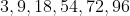
， （8）其总体平均值为
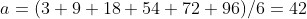
，现用简单随机抽样的方法，从总体中抽出 3 个样本
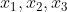
，用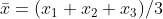
估计。读者可能会有疑问：“既然 已经知道了，还有何必要通过抽样去估计它？”实际上，在现实问题中，个体指标值及其平均值 都是不知道的。正如一群人，在未对其中某个体量测之前，不可能知道其身高。此处是作为例子，假装不知道 而去估计它，然后拿估计值与已知的 值比较，看其性能如何。正如要验证一杆秤是否准确时，可以拿一个重量已知的东西在上面称一称。
总体方差按公式（7）计算，为
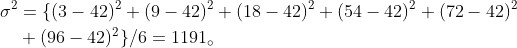
从总体（8）中抽 3 个样本，其一切可能结果及其相应的样本均值
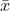
，如表 3.3 所示。因为是简单随机抽样，样本的 20 种不同情况，都有同等的机会出现，所以我们可以换一种看法：所谓用 去估计总体平均，等于从一个包含 20 个个体的总体中随机抽出 1 个去估计 。这 20 个个体的指标值如表 3.3 所示。表 3.3 从总体（8）中抽 3 个样本的结果及其
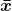
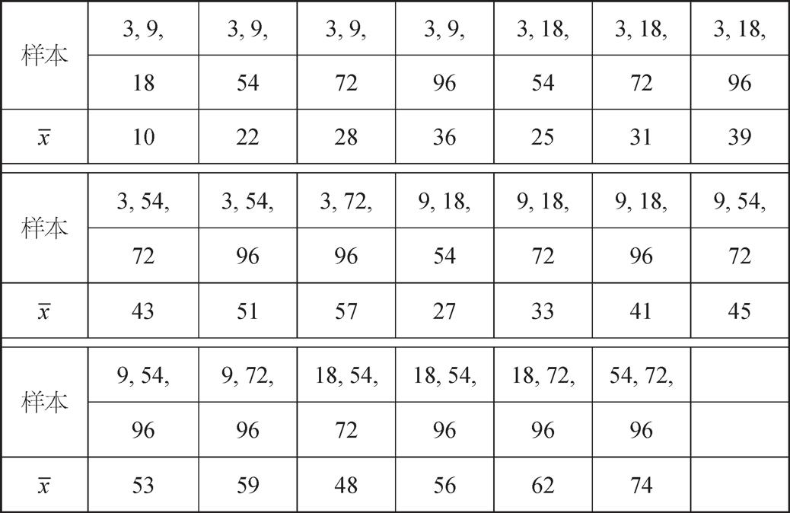
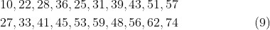
此总体的平均值容易算出为 42，即要估计的 值。这话的意思是，若拿 去估计 ，有时偏低，有时偏高，具体从上表看出，可以低到 10，高到 74，但其平均恰为 42，即 。这个性质叫作样本均值 的“无偏性”，或者说， 是 的无偏估计。这个名词在字面上易引起误解，以为用 去估计 在任何情况下都没有一点偏差，其实不然。从上表看出，不论样本抽取的结果如何， 没有恰等于 的，故总有偏差。说 无偏是指其一切可能结果的平均为 ，并非指在任何具体情况下为 。
再计算 值的总体（9）的方差（称为 的方差）：
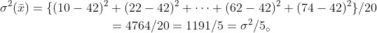
的方差压缩到原来方差  的 1/5。方差愈小，表示其取值在其平均值（即 ）附近集中的程度愈大，这意味着，用几个样本的平均去估计总体平均 ，比用 1 个样本去估计，其精度有改善，且改善的幅度，随着样本量的增大而增加。这可通过直接计算证明。在本例中，如依次取样本量 1, 2,…直到 6，则仿照上述样本量为 3时的计算，不难证明在每种情况下 都有无偏性，且方差随样本量增加而递减，情况如表 3.4 所示。
的 1/5。方差愈小，表示其取值在其平均值（即 ）附近集中的程度愈大，这意味着，用几个样本的平均去估计总体平均 ，比用 1 个样本去估计，其精度有改善，且改善的幅度，随着样本量的增大而增加。这可通过直接计算证明。在本例中，如依次取样本量 1, 2,…直到 6，则仿照上述样本量为 3时的计算，不难证明在每种情况下 都有无偏性，且方差随样本量增加而递减，情况如表 3.4 所示。
表 3.4 随样本量增加而递减
| 样本量 | 1 | 2 | 3 | 4 | 5 | 6 |
 的方差 的方差 | 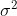 | 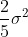 | 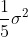 | 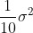 | 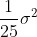 | 0 |
样本量为 6 时，等于全面普查， 必然等于 ，毫无误差，因此方差为 0。
可以在理论上建立一般的公式。若总体包含 个个体，总体均值为 ，方差为 。用简单随机抽样的方法从此总体中抽出样本 个，样本均值记为 ，则 为 的无偏估计（无偏的意义见前面的解释），而 的方差为
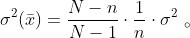
（10）它随 增加而减小，我们讨论过的例子中
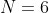
，因此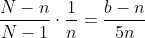
。当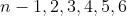
时，其值依次为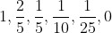
，如表 3.4 所示。在简单随机抽样中，如把样本一个一个地抽出，则每次抽后不再放回去。在第 1 章中我们讨论“盒中抽球”的模型时，抽后是要放回的。设想在这里我们也按这种放回的方式抽样（这时，一个个体可以多次出现在样本中），而仍用样本均值 去估计总体均值 ，则可以证明， 仍为 的无偏估计，但 的方差，记为
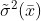
，与公式（10）不同：（11）
这里 为样本量， 为总体方差。注意 与总体中所含个体数 无关，而公式（10）中的 则与 有关。
拿公式（11）与公式（10）比较，少了一个因子 。因为 等于或大于 1，所以这个因子总不大于 1 且在 大于 1 时，必小于 1。因此，除非只抽一个样本，否则按不放回的方式抽，其样本均值 的方差，比按放回的方式抽时小。这表明，用不放回的方式抽能得到（用 5 估计 的）较佳的精度，这一点在直观上看也是显然的。
总体方差的估计：样本方差 我们看到，为了解用样本的均值去估计总体均值的精度如何，需要知道总体的方差 。但 一般是未知的，只能通过样本去估计它。设用简单随机抽样的方法抽得样本 ，依照总体方差的公式（7），把样本 权且看作一个总体，按公式（7），其方差为
（12）
它称为“样本方差”，因为这一方差是从样本中算出的。可以考虑的一种做法是用 估计 。这个想法是很自然的，因为在某种程度上样本是总体的代表，样本中各个体指标值散布的程度（以 衡量），理应能反映总体中各个体指标值散布的程度（用 衡量）。
这估计的效果如何呢？我们拿前面讨论过的数字例子来考察一下。总体包含 6 个个体，其各指标值如（8）所示。从其中抽 个样本，有 20 种可能的情况。把每种情况的样本方差一一算出来。例如，样本为 3, 9, 18 时，。按公式（12），样本方差为
对全部可能样本的计算结果如表 3.5 所示。
表 3.5 从总体（8）中抽 3 个样本对应的
从此表可以看出，不论抽得的样本如何，利用样本方差 去估计 （其值为 1191），都有很大的误差。随着样本的不同， 可以小至 38，大至 1806，与 最接近的 1016 和 1064，也有相当的距离。造成这种情况有两个原因：一是总体方差 大，二是样本量 太小。在现实问题中，总体所含个体数一般很大。为了把 估得准一些，样本量 要取得大一些。当 很小时， 无法太大（ 不能超过 ），但这时可以做全面普查，没有抽样的必要。
如果把表中 20 个 值求平均，结果为
这个值比 的真值小，它表明，用 估计 ，整体上讲倾向于偏低。为改大一些，可以试试在 的定义公式（12）中，把右边的分母 改为 。对此例而言，，按 计算的结果，其 20 个值的算术平均为 1429.2，比 的真值 1191 又偏大了。因此，和 前的乘数应大于 而小于 。理论研究表明，此乘数应为
5。
（13）
其中 是总体所含个体数。 是修正的样本方差，它是 的无偏估计。“无偏”的意义在前面已有了解释，就本例而言，它的意义是，如果就一切可能的 20 组样本一一算出其 的值，则这 20 个值的算术平均恰为 的真值 1191。因而从整体上看， 不倾向于偏高或偏低。当然，即使经过这一修正， 在各样本（每样本含 3个值）下所取的值，仍与 有较大差距。上面已讲过这有其内在原因（ 太大，样本量 太小），不是通过修正能解决得了的。
作为抽样的目的，主要是为估计总体平均值 ，其所以估计总体方差 ，在很多情况下，是为了由此去评估用样本均值 估计 的精度如何 6。具体使用方法如下。当用 估计 时，我们不能保证所得 值恰为 ，而是会有一个误差界限。这界限是多少呢？在统计学上，它用以下的形式表达出来：
“ 的值界于 与 之间。” （14）
其中 由公式（13）算出（公式（13）算出 ，开方得 ）， 为样本量。 是一个选定的大于 0 的数。先不说这个 。从（14）看出如下内容。
1） 愈小，此界限愈窄，表明以 估计 的误差小。这理由在上面已讲过了， 是作为总体方差 的估计。权且认为 大体上为 ， 愈大，总体中各个值的指标值散布也大，在这种情况下，总体均值 就难得估准，反映在（14）中， 的误差界限就大一些。
2） 在分母，故 愈大，（14）规定的界限愈窄。这道理很明显， 为样本量， 愈大，观察的个体数愈多，估计当然应准一些。不过由（14）看出，准确度并非与 成比例，而是与 成比例。因此过大的样本量造成收益递减： 由 100 增至 400，准确度只提高二倍而非四倍。
最后说到 。 取得愈大，由（14）规定的界限愈宽，它真能成立的可能性就更大。正如估计人的年龄，估计他在 30～31 岁，成立的可能性不大，若估计他在 10～80 岁，则可能性大多了。由此可见， 的选择面临一个“可靠性”与“准确性”的矛盾问题：把事情说得太确切，不留余地，可靠性就低；说得稀松一些，留有余地，可靠性就高。在应用上选择 时，是在这二者之间做出适当的折中，看哪个因素更要紧一些。在统计学上，有以下几个值比较常用。
，相应于可靠度 99% ；
，相应于可靠度 95% ；
，相应于可靠度 90%。
例如，取 ，有了样本，算出 ， 再计算
和 ，
则我们有 95% 的把握说：“未知的总体均值 在上述两个数之间。”（14）要在 和 都很大时使用， 太小了就不准确。
像（14）这样的断语，称为 的“区间估计”，因为它把未知的 估计在一定的区间之内。与此相应，像“用 估计 ”这样的估计，则称为 的“点估计”。点估计的缺点是没有告诉其误差如何，而这正是区间估计的优点。区间估计的方法是原籍波兰的美国统计学家奈曼（1894—1981）在 20 世纪 30 年代创立的。他把区间估计称为“置信区间”。“置信”一词，表明区间提供的界限并非绝对可靠，而是只有一定的可靠度，即上文提到的 90%、95%、99% 等，奈曼把这称为“置信系数”。奈曼创立的区间估计方法，如今是统计分析中最重要的工具之一。
5因 ，有 。另一方面，（ 为全面普查），放 ，即 。两边同除以 得 。
6在有些情况下，估计